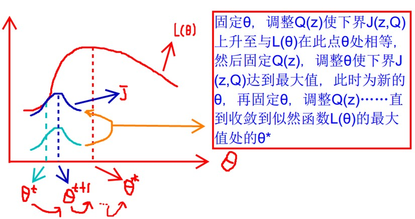

EM算法
最大期望算法（ Expectation-maximization algorithm ），是在概率模型中寻找出参数最大似然估计或者最大后验估计的算法，其中概率模型依赖于无法观测的隐型变量。
一、EM要解决的问题
首先要明确的是极大似然估计解决的是单个变量的预估问题，而当这个待预测变量又同时依赖于另一个隐藏变量时，则需要使用EM进行求解。
这里需要掌握贝叶斯公式、极大似然预估这两个知识点：
1.1 贝叶斯公式
$p(w|x)=\frac{p(x|w)p(w)}{p(x)}$
其中$p(w)$为先验概率，表示每种类别分布的概率，$p(x|w)$为条件概率，表示在属于w前提下x发生的概率；$p(w|x)$为后验概率，表示x发生的前提下它属于w的概率，有了这个后验概率我们就可以对样本进行分类，后验概率越大，说明属于该类别的可能性越高。
这里常用：$p(w_i|x)=\frac{p(x|w_i)p(w_i)}{p(x)}=\frac{p(x|w_i)p(w_i)}{\sum_{j=0}^J{p(w_j)p(x|w_j)}}$ ，主要是进行了拆分，通过先验知识预测后验概率，这里$p(w_i)$以及$p(x|w_i)$概率已知。
1.2 极大似然估计
很多时候我们只有部分数据，但是要预测出该数据的概率分布，怎么做呢？就是利用已知的样本，反推最有可能（概率最大）导致这样数据样本结果的参数值。
假如我们有样本集：$D={{x_1, x_2,…,x_N}}$ , 假定该样本数据服从概率$p(X|\theta)$ ，那么可以预想在该分布下生成$x_1$的概率为$p(x_1|\theta)$，生成$x_2$的概率为$p(x_2|\theta)$，以此类推，那么生成这个序列D的总体可能性为：
$p(D|\theta)=\prod_{i=1}^n{p(x_i|\theta)}$
当该概率取得最大值的时候也就是该序列D最有可能产生的时候，那么我们的目标就是寻求使得$p(D|\theta)$最大的$\theta$ ，可以看出整个公式中只有一个$\theta$未知，而我们要求最大最小值，正适合直接寻找梯度为0的位置的方法。
由于概率都是小于1的值，太多的连乘会导致结果太小甚至越界，所以我们使用log函数来放大数值结果，整体求解过程如下：
$\widehat{\theta}=argmax_{\theta}l(\theta)=argmax_{\theta}\prod_{i=1}^{N}p(x_i|\theta)$
取对数后： $\widehat{\theta}=argmax_{\theta}ln(l(\theta))=argmax_{\theta}\sum_{i=1}^{N}p(x_i|\theta)$
在似然函数满足连续可微的条件下极大似然估计量：
$\frac{dl(\theta)}{d(\theta)}=0$ ==> $\frac{dlnl(\theta)}{d\theta}=0$ 通过解决该方程获得$\theta$的估值。
1.3 Jensen不等式
假设$f(x)$为凸函数，X是随机变量，那么：$E[f(X)]\geq f(E[X])$ , 通俗的说法是函数的期望大于等于期望的函数。

二、EM算法的原理
如果说极大似然估计只是对一个数据分布的预测，那么当有其他的隐藏变量$z$的时候，如果使用$\frac{dl(\theta,z)}{d(\theta)}=0$ 那么通过解方程是没办法把未知的$\theta$和$z$一次求出来的，那么可以换个思路，我们先假定一个$\theta$然后求$z$，再根据这个$z$反求最优的$\theta$，通过这样来回求解直至最终收敛，形成最终的$\theta$和$z$。
可能会比较疑惑哪来的$z$，举个例子来说，我们抛硬币，原来只有一个硬币，所以我直接认为该硬币正面朝上概率为$p(\theta)$即可，但是现在有多个硬币，那么需要先知道是抛了哪个硬币，然后再乘以该硬币正面朝上的概率才是结果，此处便是有一个隐含变量$z$存在（哪个硬币，这个具体来说又可以解释为按一个概率分布$p(z)$取得该硬币）。
此时，问题的描述由$l(\theta)=\prod_{i=1}^n{p(x_i|\theta)}$ 变为了$l(\theta)=\prod_{i=1}^n{p(x_i|\theta,z)}$
那么根据全概率公式$p(B)=\sum_{i=1}^{n}p(A_i)p(B|A_i)$ 可得：
$l(\theta)=\prod_{i=1}^n{p(x_i|\theta,z)}=\prod_{i=1}^{n}\sum_{Z}p_{\theta}(z)p(x_i|z)$
两边取对数：
$lnl(\theta)=\sum_{i=1}^{n}ln\sum_{Z}p_{\theta}(z)p(x_i|z)$
我们的目标是使得$lnl(\theta)$极大似然估计值最大，这样才越能表达出当前已知序列的概率，而当我们预先设定一个$\theta=\theta_{n-1}$ 的时候（此处$\theta_{n-1}为一个假定的确定值，只是为了说明\theta更新是由第n-1个到第n个$），$lnl(\theta)$其实是一个只包含了$z$变量的函数，我们要做的是找出在该情况下使得$lnl(\theta)$最大的$z$，这时候这个$z$是基于$\theta_{n-1}$下最优的$z$，下一步就是利用这个局部最优的$z$反求在这个$z$下更优的$\theta_n$，这里要使得这个$\theta_n$ 比$\theta_{n-1}$更好，那就说明在$\theta_n$下$lnl(\theta_n)$ 比$lnl(\theta_{n-1})$更大，也就是：
$lnl(\theta_n)-lnl(\theta_{n-1})>0$
$lnl(\theta_n)-lnl(\theta_{n-1})=\sum_{i=1}^{n}ln\sum_{Z}p_{\theta_n}(z)p(x_i|z)-\sum_{i=1}^{n}ln\sum_{Z}p_{\theta_{n-1}}(z)p(x_i|z)$
其中由于$\theta_{n-1}$由于是常数项，可以直接将$z$省略：
$=\sum_{i=1}^{n}[ln\sum_{Z}p_{\theta_n}(z)p(x_i|z)-lnp_{\theta_{n-1}}(x_i)]$
其中可以拆解一下：
$Q1=ln\sum_{Z}p_{\theta_n}(z)p(x_i|z)=ln\sum_{z}p_{\theta_{n-1}}(z|x_i)\frac{p(x_i|z)p_{\theta_n}(z)}{p_{\theta_{n-1}}(z|x_i)}$
这里把$p_{\theta_n}(x_i)$当作x，则$\sum_{z}p_{\theta_{n-1}}(z|x_i)\frac{p(x_i|z)p_{\theta_n}(z)}{p_{\theta_{n-1}}(z|x_i)}$就是$E[x]$ ，根据jensen不等式：
$Q1=ln\sum_{z}p_{\theta_{n-1}}(z|x_i)\frac{p(x_i|z)p_{\theta_n}(z)}{p_{\theta_{n-1}}(z|x_i)}\geq \sum_{z}p_{\theta_{n-1}}(z|x_i)ln\frac{p(x_i|z)p_{\theta_n}(z)}{p(z|x_i)}$
$Q2=lnp_{\theta_{n-1}}(x_i)=lnp_{\theta_{n-1}}(x_i)\times\sum_{Z}p_{\theta_{n-1}}(z|x_i)$ 此项后部分其实和为1，它与前项无关
$Q2=\sum_{z}p_{\theta_{n-1}}(z|x_i)lnp_{\theta_{n-1}}(x_i)$
此时：
$lnl(\theta_n)-lnl(\theta_{n-1})\ge \sum_{i=1}^{n}[\sum_{z}p_{\theta_{n-1}}(z|x_i)ln\frac{p(x_i|z)p_{\theta_n}(z)}{p(z|x_i)}-\sum_{z}p_{\theta_{n-1}}(z|x_i)lnp_{\theta_{n-1}}(x_i)]$
$=\sum_{i=1}^{n}\sum_{z}p_{\theta_{n-1}}(z|x_i)[ln\frac{p(x_i|z)p_{\theta_n}(z)}{p(z|x_i)}-lnp_{\theta_{n-1}(x_i)}]$
$=\sum_{i=1}^{n}\sum_{z}p_{\theta_{n-1}}(z|x_i)[ln\frac{p(x_i|z)p_{\theta_n}(z)}{p(z|x_i)p_{\theta_{n-1}(x_i)}}]$
$=\sum_{i=1}^{n}\sum_{z}p_{\theta_{n-1}}(z|x_i)ln\frac{p_{\theta_n}(x_i,z)}{p_{\theta_{n-1}}(z,x_i)}$
那我们说过不断迭代优化，这里如果有更合适的$\theta$出现的话，上式应该大于0才对，也就是新的$\theta_n$应该：
$lnl(\theta_n)\ge \sum_{i=1}^{n}\sum_{z}p_{\theta_{n-1}}(z|x_i)ln\frac{p_{\theta_n}(x_i,z)}{p_{\theta_{n-1}}(z,x_i)}+lnl(\theta_{n-1})$
右边就是下边界函数，EM的目的就是要去的目标函数的最大值，也就是不断的提升这个下边界的值来进行，假定右边界为$Q(\theta_n|\theta_{n-1})$ :
$Q(\theta_n|\theta_{n-1})=lnl(\theta_{n-1})+\sum_{i=1}^{n}\sum_{z}p_{\theta_{n-1}}(z|x_i)ln\frac{p_{\theta_{n}}(x_i,z)}{p_{\theta_{n-1}}(z,x_i)}$
求解主要集中在未知函数，我们将其中常数项拆开：
$Q(\theta_n|\theta_{n-1})=\sum_{i=1}^{n}\sum_{z}p_{\theta_{n-1}}(z|x_i)ln{p_{\theta_n}(x_i,z)}-\sum_{i=1}^{n}\sum_{z}p_{\theta_{n-1}}(z|x_i){p_{\theta_{n-1}}(z,x_i)}+lnl(\theta_{n-1})$
通过上式可以发现只有第一项带有未知数$\theta_n$ 需要求解。
既然要使其最大化，这里同样运用斜率（导数）为0的思想： $\frac{\partial Q(\theta_n|\theta_{n-1})}{\partial \theta_n}=0$
求得此时取极大值时$\theta_n$ 的取值，这个值就是进入到下一步迭代是的概率分布参数值, 有了$\theta_n$之后就可以获得$Q(\theta_{n+1}|\theta_n)$，然后不断地迭代直到收敛。图示的话如下：

三、 EM应用场景
EM算法缺陷之一：传统的EM算法对初始值敏感，聚类结果随不同的初始值而波动较大。总的来说，EM算法收敛的优劣很大程度上取决于其初始参数。
EM算法应用：K-means 与 高斯混合模型